企業理念
私たちの暮らしは、数えきれない「はかる」で、できている。
一粒の米も、一滴の水も、正しくはかられて、はじめて価値になる。公正な取引も、たしかな品質も、安心できる毎日も、すべては、正確にはかることから始まる。
1900年の創業から126年。近江度量衡は、あらゆる現場の「はかる」に、一品一様のものづくりで応えつづけてきた。
暮らしを、産業を、その先の未来を。私たちは、これからもはかりつづける。
製品・技術
農産物から穀類、工業まで。計画・設計から制御・製造・施工・保守までを一貫して自社で担い、現場ごとに最適な計量システムをつくり上げます。同じものはひとつとしてありません。
納入実績
農産物・穀類から工業分野まで、全国の生産者・メーカーの現場へ計量システムを納入。用途ごとに最適化した一品一様の設計で、確かな「はかる」を支えつづけています。
CLIENTS — 主な納入先

採用情報
1900年から続く「はかる」のものづくりを、次の世代へ。設計から製造・施工・保守まですべてを自社で担う近江度量衡で、あなたの力を活かしませんか。